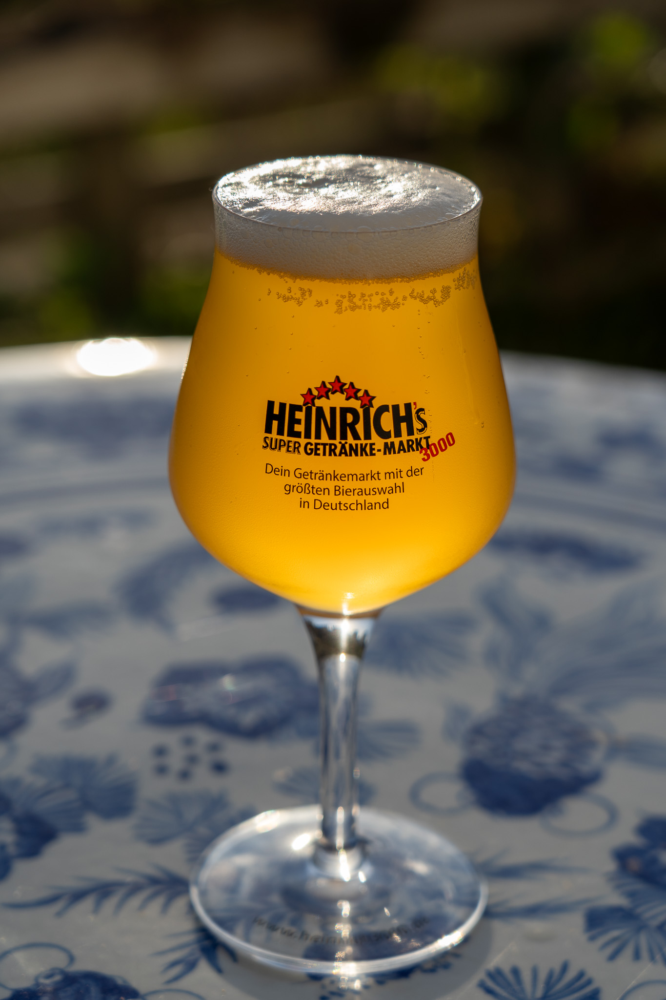
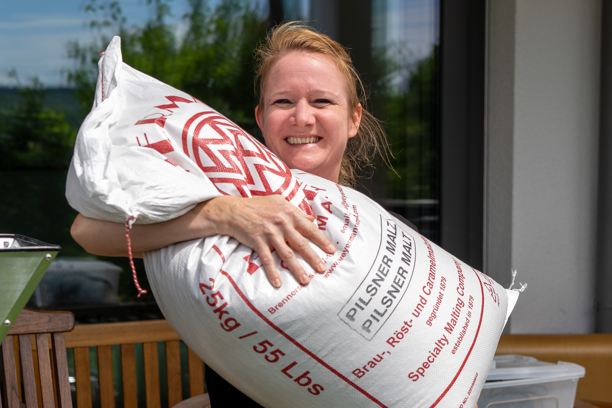
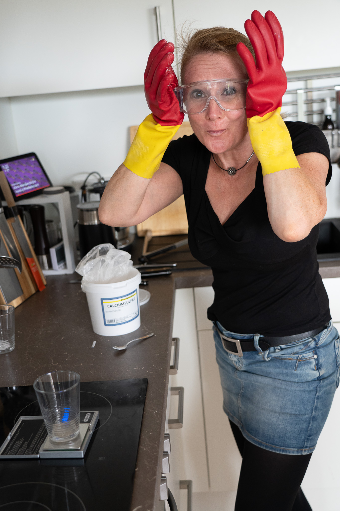
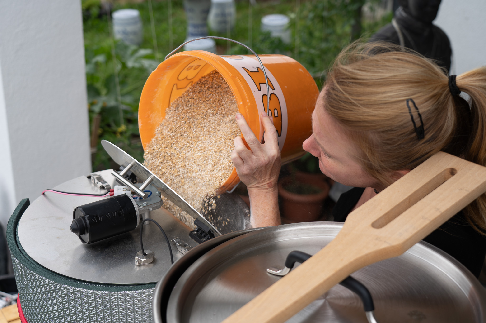
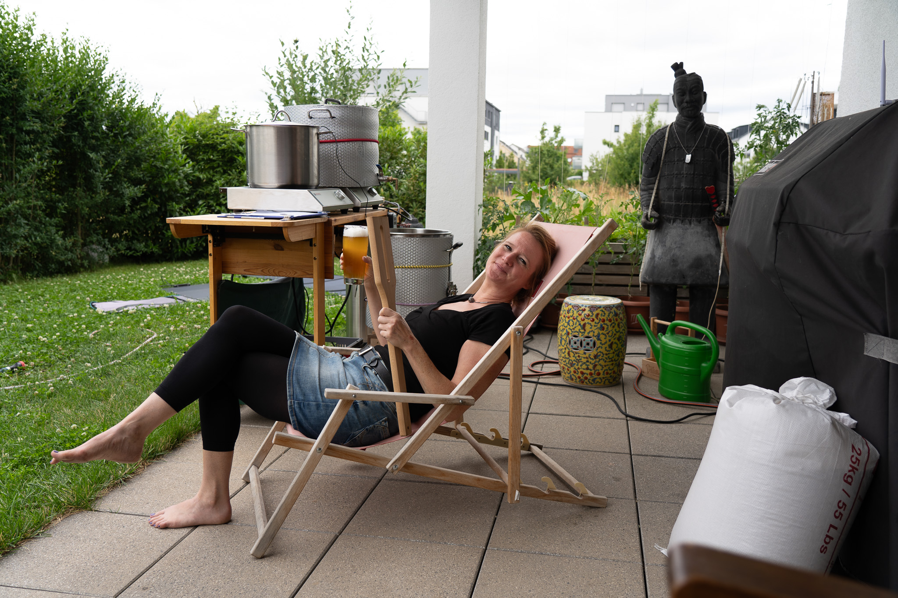
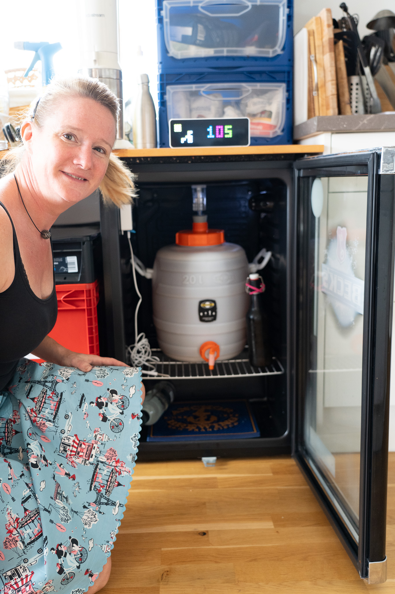
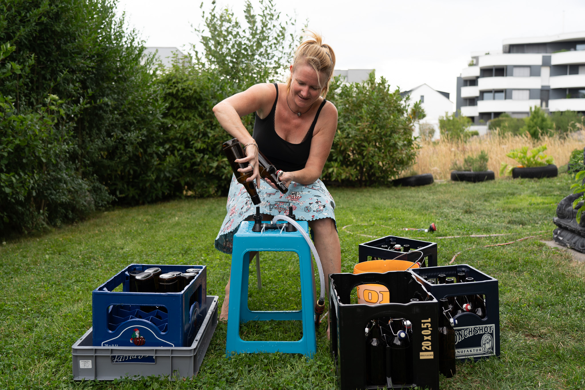
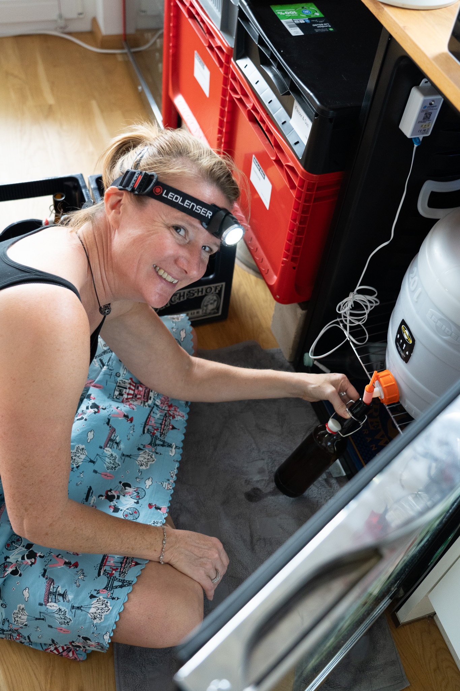
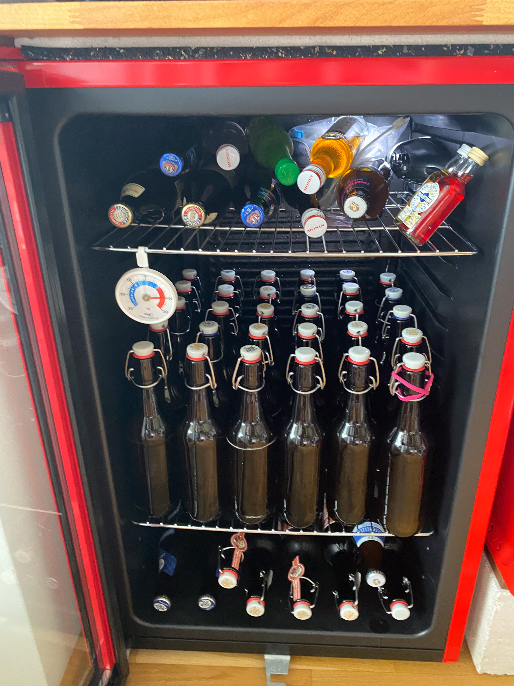
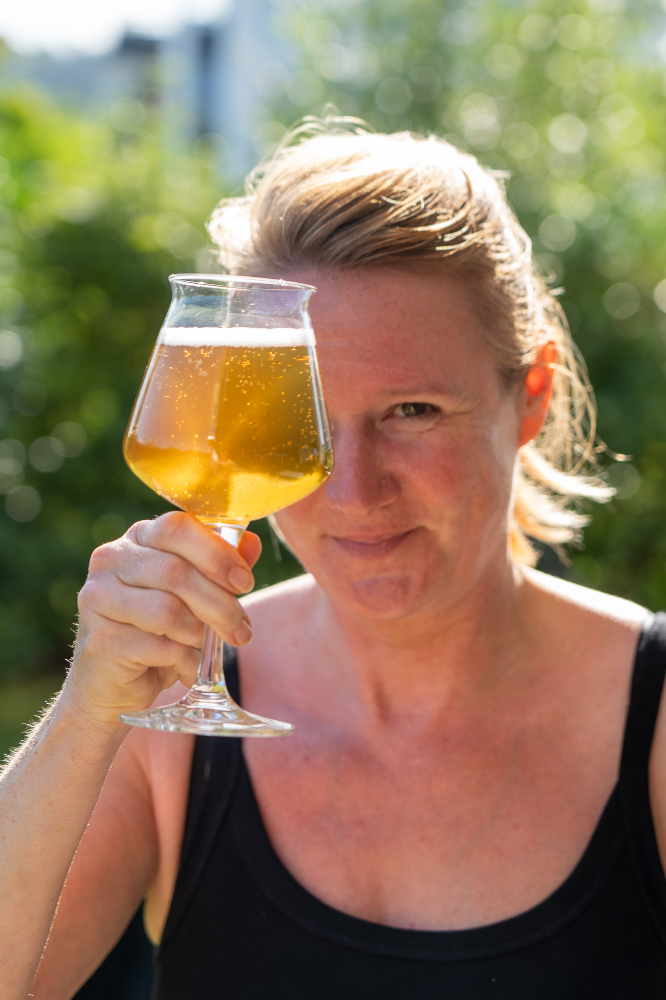

Sud #3.2023 - Bernds Bier -Ein süddeutsches Pilsner

Bierstil: Deutsches Pilsner
Stammwürze: 14 °Plato
Bittere: 36 IBU
Farbe: 6,9 EBC
Energie: 56,8 kcal/237.8 kJ per 100 ml
Alkohol: ~ >=5,6% Alkohol
Rezept
Zu Bernds 75. Ehrentag hat sich Christine, Auszubildende bei Bärbel Bräu, daran gemacht, ein besonderes Bier
für Ihren Papa zu brauen. Zutaten, die nur aus Gegenden kommen, in denen Christine bereits auf bieriger Entdeckungstour war. So kommt das Malz aus
Bamberg, der Hopfen aus Tettnang und das Brauwasser aus ... Bärbel-Bräus Heimat Renningen ;-).
Bamberger Malz - die Fa. Weyermann produziert seit 1879 hochwertige Malzsorten in Bamberg.


Wasseraufbereitung - Neuland für Auszubildende und Ausbilder! Da Bärbel Bräu das erste Mal ein Bier Pilsner Art braut, muss das Brauwasser in Renningen erstmals angepasst und für diesen Bierstil vorbereitet werden. Wir sind gespannt, ob das wie berechnet klappt!
Einmaischen. Das Korn wurde hierfür selbst geschrotet - bzw. die Körner gebrochen. Ob der Mahlgrat passt, wird sich erst hinterher zeigen?!


Brauanlage und Enzyme arbeiten lassen. Und Läuterhalbe??? Äh, das ist doch zu früh! ;-)
Gären. Zum Glück verfügt Bärbel Bräu über einen ausreichend großen Kühlschrank!
Nur ein niedrigerer Gärspund muss organisiert werden, damit das Fass in den Kühlschrank passt.
Auch hier sind umfangreiche Recherchen bzgl. Gärtemperatur und -dauer erforderlich, da es das erste untergärige Bier ist, das Bärbel Bräu im Sommer braut.
Nach langen Recherchen - mit vielen unterschiedlichen Aussagen - wählt Bärbel Bräu eine 3-wöchige Gärung im Fass bei 10°.


Flaschen putzen. Putzen ist das halbe Leben, auf jeden Fall beim Bier brauen ... .
Flaschenfüllung. Nachdem die 3 Wochen Gärung im Fass abgeschlossen sind, wird Bernds Bier in Flaschen abgefüllt.
Als Beigabe bekommt jede Flasche eine kleine Menge Zucker, mit der die verbleibende Hefe dann hoffentlich das gewünschte Maß an Kohlendioxidgehalt im Bier erzeugt.


Reifen und karbonisieren. Jetzt heißt es hoffen und warten, dass das gewünschte Ergebnis erzielt wird und das Bier wie gewünscht schmeckt.
Aber die Erstverkostung des Jungbiers ist vielversprechend.
Prost Papa! Ich hoffe, Dir schmeckt Dein Bier.
